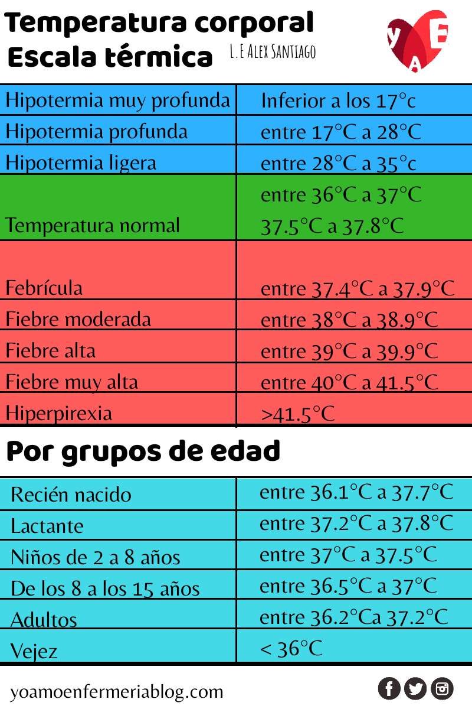
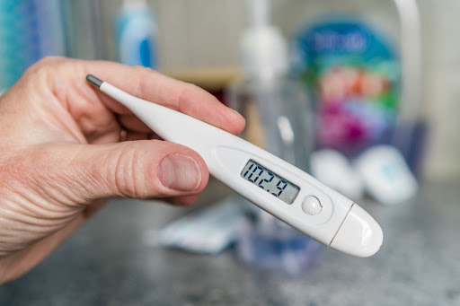
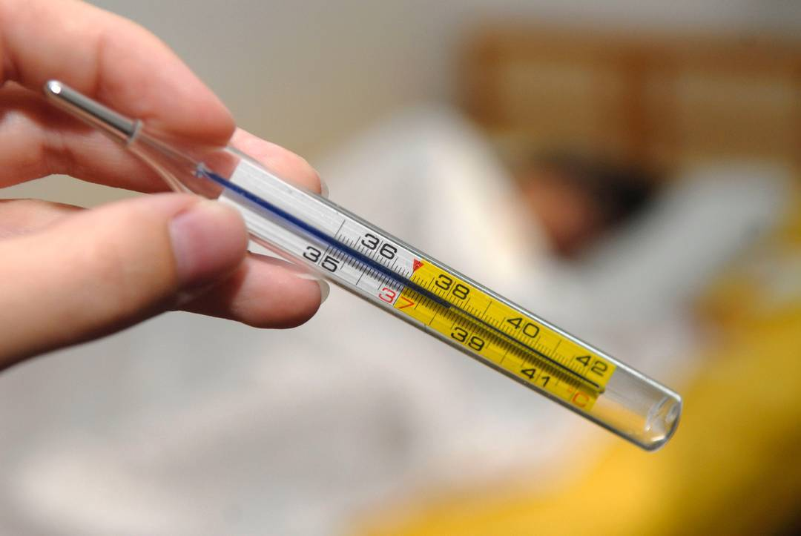

Como definimos a la Temperatura Corporal
Es una medida de la capacidad del organismo de generar y eliminar
calor.
El cuerpo humano es un mecanismo de defensa perfecto y excelente para defenderte
de los diferentes problemas de salud que se puedan sucitar.
Al momento de empezar con un exceso de temperatura corporal los vasos sanguíneos en la piel se
dilatan para transportar el exceso de calor en la superficie de la piel,
nuestra temperatura se puede medir en muchos lugares del cuerpo. Los más comunes son la boca, el óido,
la axila y el recto. Aunque también se puede medir en la frente.
Ahora bien para saber cual es nuestra temperatura corporal se utilizan los termómetros estos se dan en grados Celsius
(ºC)

¿Cuando tenemos fiebre?
La fiebre en la mayoría de personas se considera cuando esta por arriba de los 38ºC, esto puede una reaación a lo siguiente:
Una infección: Esta es la cauda más común de fiebre. Las infecciones pueden afectar a todo el cuerpo a una parte del cuerpo.
Medicamentos: Incluyen antibiótico, opioides y muchos otros, cuando tenemos fiebres por medicamentos se le conoce como "Fiebre Medicamentosa",
los medicamentos como los antibióticos elevan la temperatura corporal directamente.
Traume grave o lesión: Esto puede incluir un ataque cardíaco, ataque de cerebral, golpe de calor o quemaduras en el cuerpo.
Una fiebre también puede ser por artritis, hipertiroidismo, e incluso algunos cánceres, como leucemia y cáncer de pulmón.
¿Qué es la hipotermia?
La hipotermia es la disminución de la temperatura del cuerpo por debajo de lo normal.
por otra parte la temperatura baja corporal (Hipotermia) ocurre con otros síntomas como escalofríos, temblores problemas
respiratorios o confusión, esto puede ser una señal de una enfermedad más grave.
La temperatura corporal baja suele ocurrir como consecuencia de la esposición al frío. Pero también puede ser causada por el consumo de drogas o
determinados transtornos como la diabetes i el hipertiroidismo.
Como tomar la temperatura corporal
Para tomar la temperatura tenemos 2 opciones, tomarla con un termómetro digital o un termómetro de mercurio.
En la actualidad ya es más sencillo tomarla ya que con un termómetro digital tenemos que seguir los siguientes pasos:

Termómetro Digital:
1.- Pulsa el botón de encendido del termómetro digital con pantalla LCD.
2.- Debes de esperar a que la numeración se ponga en cero.
3.- Coloca el termómetro en la zona recomendada (axila, boca, odio Mecionado anteiormente)
4.- Espera a que suene un pequeño !bip-bip-bip¡ esto indicará el final de la medición.
5.- En la pantalla se indicará la temperatura de la persona.

Termómetro de Mercurio
1.- Desinfectar el termometro con algodón y alcohol.
2.- Agitarlo bien el termómetro antes de ponerlo, asi parte de una temperatura
ambiental y con el mercurio en su nivel más bajo.
3.- Coloca el termómetro en la zona del cuerpo en la que te midas la temperatura
comunmente es en la axila.
4.- Tienes que esperar al rededor de 3 minutos. Controla el tiempo para no retirarlo
antes de que el mercurio se haya dilatado.
5.- Posteriormente retira el termometro y comprueba hasta donde llega el mercurio en la escala de
grados. Si supera los 37ºC entonces tienes fiebre.